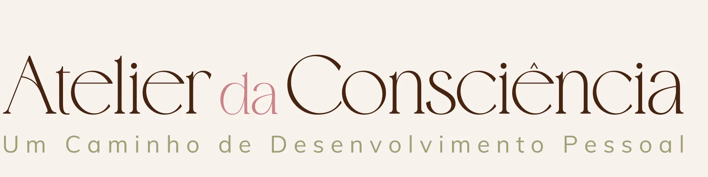
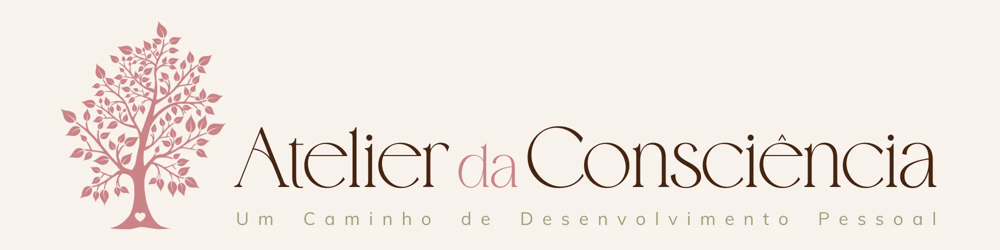

O Atelier da Consciência é um espaço onde podes parar, olhar com mais clareza para aquilo que estás a viver e encontrar formas mais conscientes de cuidar de ti e construir a tua vida.
Podes fazê-lo através da Consultoria Terapêutica, num acompanhamento mais abrangente, ou escolher em O Caminho uma área específica que queiras trabalhar.
Podes também recorrer às Técnicas terapêuticas e energéticas de forma independente ou participar na Meditação da Lua Nova, um encontro mensal dedicado a cuidar, alinhar e preparar a tua energia para o ciclo lunar que começa.
Seja qual for a forma que escolheres, o trabalho parte sempre da tua realidade, das tuas necessidades e do momento em que estás.
Olha para ti como um todo: corpo, mente, emoções, energia e vida prática, porque aquilo que vivemos raramente pertence a uma única parte de nós.
A intenção é que aquilo que vais compreendendo não fique apenas na mente, mas que se traduza na forma como vives, escolhes, te relacionas e te posicionas no mundo.
Catarina Mendonça Português
Fundadora do Atelier da Consciência
Acompanho processos de transformação pessoal através de consultoria terapêutica e trabalho energético.
No meu trabalho procuro ir ao essencial, compreender o que está realmente a acontecer e transformar essa compreensão em mudanças concretas na vida real. Gosto de descomplicar, organizar e encontrar soluções ajustadas a cada pessoa, sem fórmulas prontas.
Trabalho com clareza, profundidade e respeito pela autonomia de quem acompanho, integrando diferentes dimensões da pessoa sempre que isso faz sentido.
Algumas das pessoas que passaram por este espaço partilharam a sua experiência:
O trabalho desenvolvido no Atelier da Consciência enquadra-se na área do desenvolvimento pessoal e energético, não substituindo acompanhamento médico ou psicológico quando necessário.